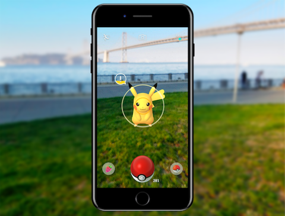

Startseite
Vorteile/Nachteile
Anwendungen
Entwicklung
Perspektive
Trackingtechnologien
Outputmöglichkeiten
Herausforderungen
Beeinflussende Faktoren
Einsatzmöglichkeiten von VR/AR
Medizin
Virtuelle Operationstrainings für Ärzte ohne Risiko für Patienten
Behandlung von Phobien durch Konfrontation in einer sicheren, virtuellen Umgebung
Unterstützung in der minimalinvasiven Chirurgie durch AR, z. B. Echtzeit-Informationen während Eingriffen
[1]
Bildung und Training
Schulungen in anspruchsvollen Berufen (z. B. Piloten, Schiffs- und Zugführer) mit VR-Simulatoren
Training von Personal in komplexen technischen Anlagen (z. B. Kraftwerke, Flugzeuge)
Interaktive und immersive Wissensvermittlung in Museen und Science Centern
[4]
Unterhaltung und Spiele
Immersive VR-Simulationen für virtuelle Welten, Adventure-Games und Stadtrundgänge
AR-Spiele wie Pokémon Go mit hoher Popularität durch Plattformen wie ARKit und ARCore
 [2]
Tourismus und Navigation
AR-basierte Navigation auf Smartphones zur Orientierung in unbekannten Gebieten
Virtuelle Stadtführungen und Besichtigungen historischer Orte mit AR-Erweiterungen
[3]
Kontaktformular
Absenden
 [4]
[4]
 [3]
[3]